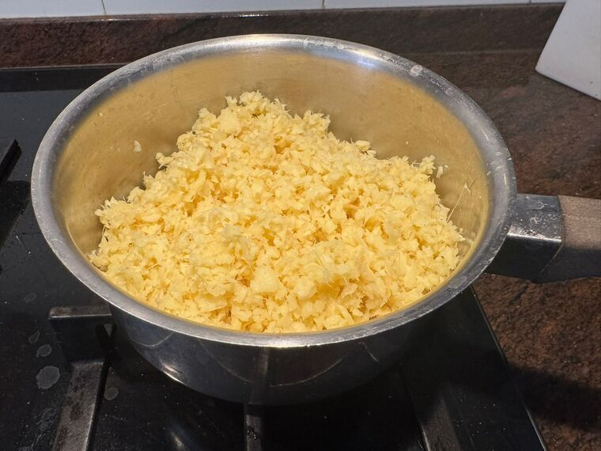
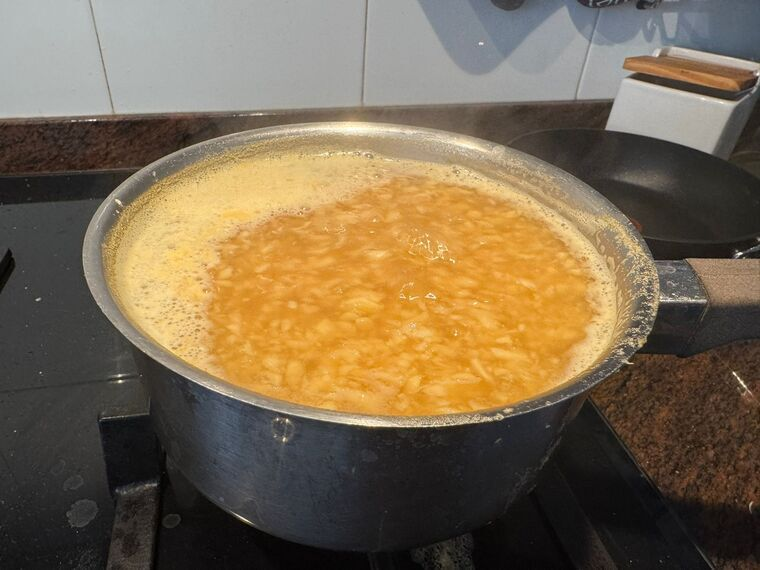
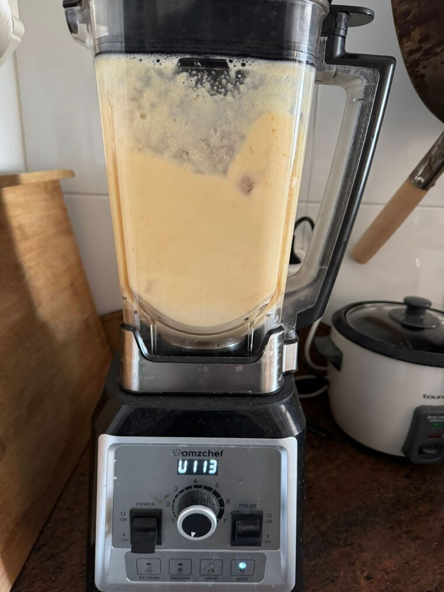

Sirop de citron au gingembre
Ingrédients
20×
- 0.5 l de jus de citron
- 300 g de gingembre frais
- 0.5 l d'eau
- 100 g de sucre
Préparation
Étape 1
Exprimer 0.5 l de jus de citron.
Étape 2
Peler et triturer 300 g de gingembre frais, à l’aide d’un mixeur.

Étape 3
Cuire le mélange à petits bouillons avec 0.5 l d'eau et 100 g de sucre.

Étape 4
Mixer le résultat au blender.

Résumé
0.5 l de jus de citron
Exprimer
300 g de gingembre frais
triturer
0.5 l d'eau
100 g de sucre
Cuire
Mixer